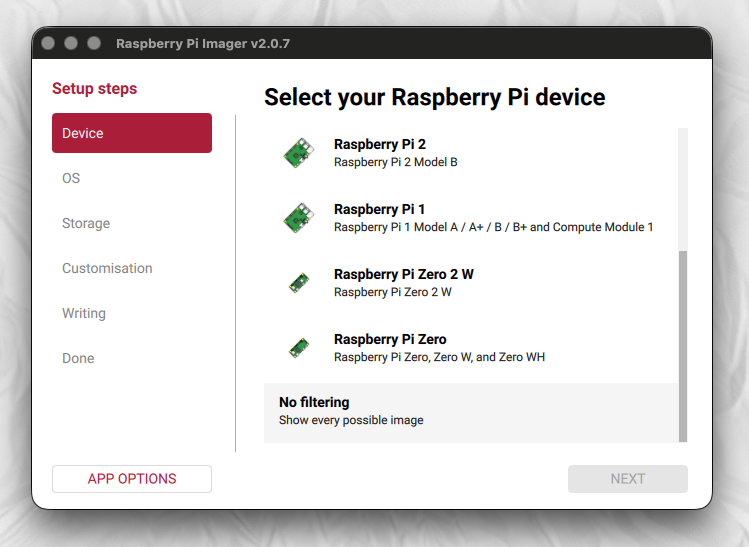
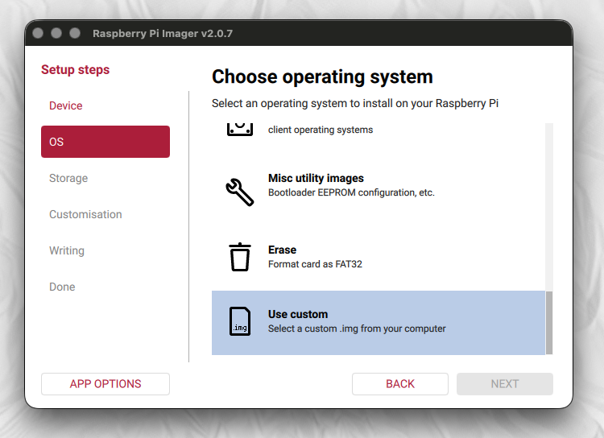
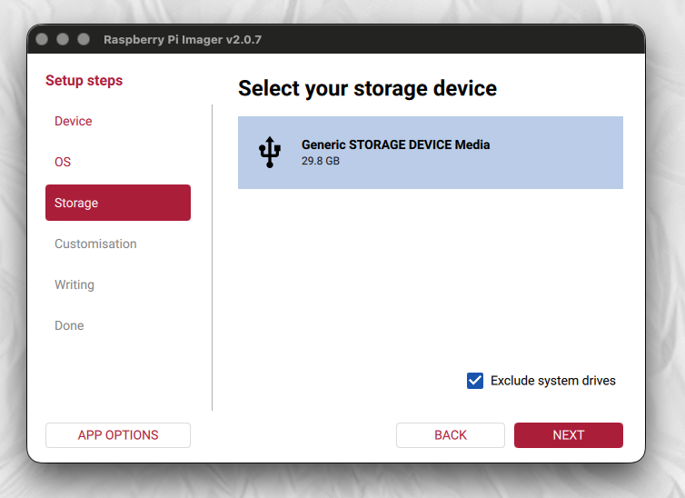
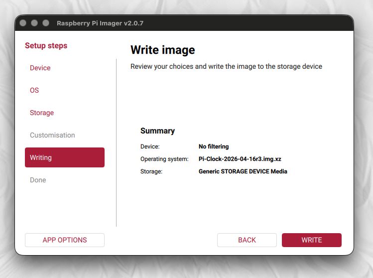
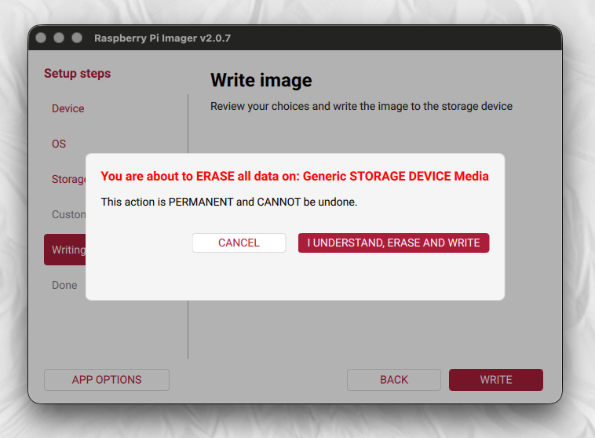
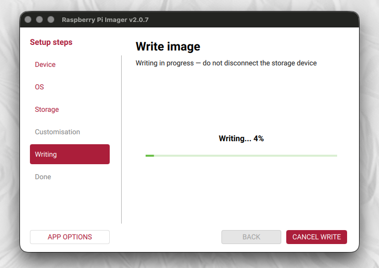

Step-by-step guide to writing the Pi-Clock OS image using Raspberry Pi Imager.
.img.xz) from the Pi-Clock home pageDownload the latest .img.xz file from the Pi-Clock home page. Save it somewhere you can find it (e.g. your Downloads folder). You do not need to decompress it — Raspberry Pi Imager handles .xz files directly.
Download and install Raspberry Pi Imager if you don't already have it. Launch the application. You'll see a step-based sidebar on the left.
Click "Device" in the sidebar and select your Raspberry Pi model from the list. If your exact model isn't shown, select "No filtering" at the bottom — the Pi-Clock image works on all Pi models.

Click "OS" in the sidebar, scroll to the very bottom of the list, and select "Use custom". A file browser will open — navigate to the .img.xz file you downloaded in step 1 and select it.

Click "Storage" in the sidebar and select your SD card from the list. Double-check you have the right device — the write will erase everything on the selected card.

The summary screen shows your selections. Check that the Operating system line shows your Pi-Clock .img.xz filename. When you're happy, click the red "WRITE" button.

A warning dialog will appear telling you all data on the card will be erased. Click "I UNDERSTAND, ERASE AND WRITE" to proceed.
The write typically takes 2–5 minutes depending on your SD card speed. A progress bar shows the status. Do not remove the card until the write and verification are complete.


Once the write is complete, Raspberry Pi Imager will automatically eject the card. Remove the SD card and re-insert it into your computer. A drive called "BOOT" will appear.
If you created a pi-clock-config.txt file using the Configurator, copy it to the root of the BOOT drive now. This pre-configures your WiFi, callsign, location, and other settings so Pi-Clock is ready to go on first boot. See Zero-Touch Configuration for all available settings.
Eject the card safely, insert it into your Pi, and power on.
SD card not writable or out of space? If Raspberry Pi Imager reports that the card cannot be written to, or shows insufficient space even on a card that should be large enough, the card likely has leftover partition tables from a previous OS. Use Imager to erase the card first: go to OS → select "Erase" → Storage → select your card → WRITE. Then start again from step 3.
No "BOOT" drive after re-inserting? Some operating systems may not automatically mount the boot partition. On macOS, it should appear on the desktop and in Finder. On Windows, it appears as a drive letter in File Explorer. On Linux, you may need to run mount /dev/sdX1 /mnt manually.
If you prefer the command line, you can write the image directly with dd:
# Identify your SD card device
lsblk # Linux
diskutil list # macOS
# Write the image (replace /dev/sdX with your SD card device)
xzcat pi-clock-os-*.img.xz | sudo dd of=/dev/sdX bs=4M status=progress
syncDouble-check the target device! The dd command will overwrite the entire device without confirmation.